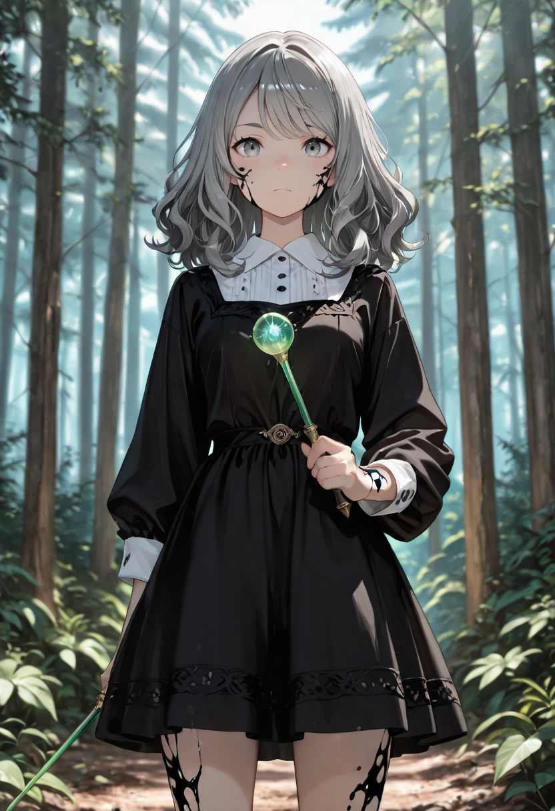
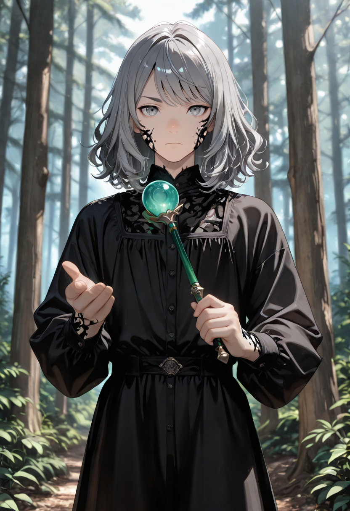
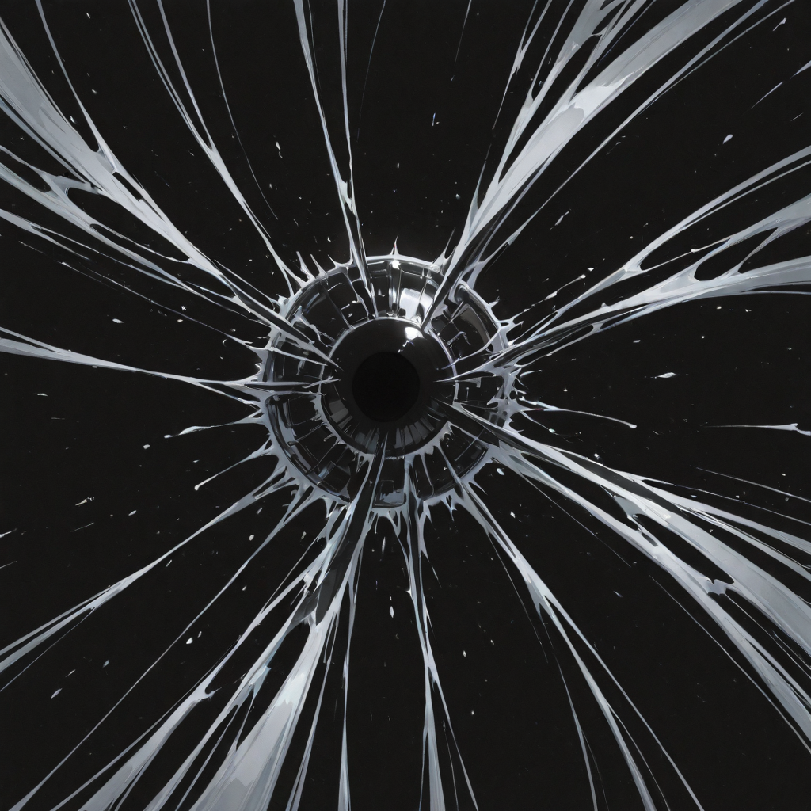
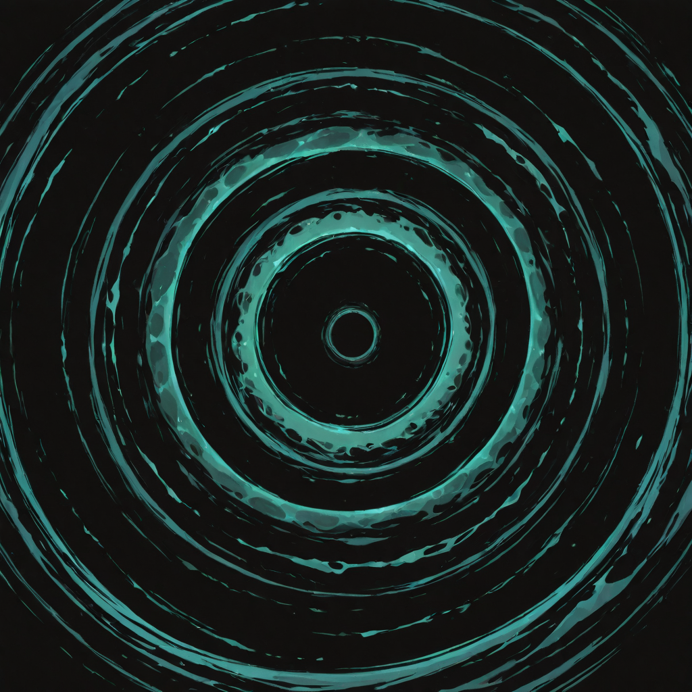
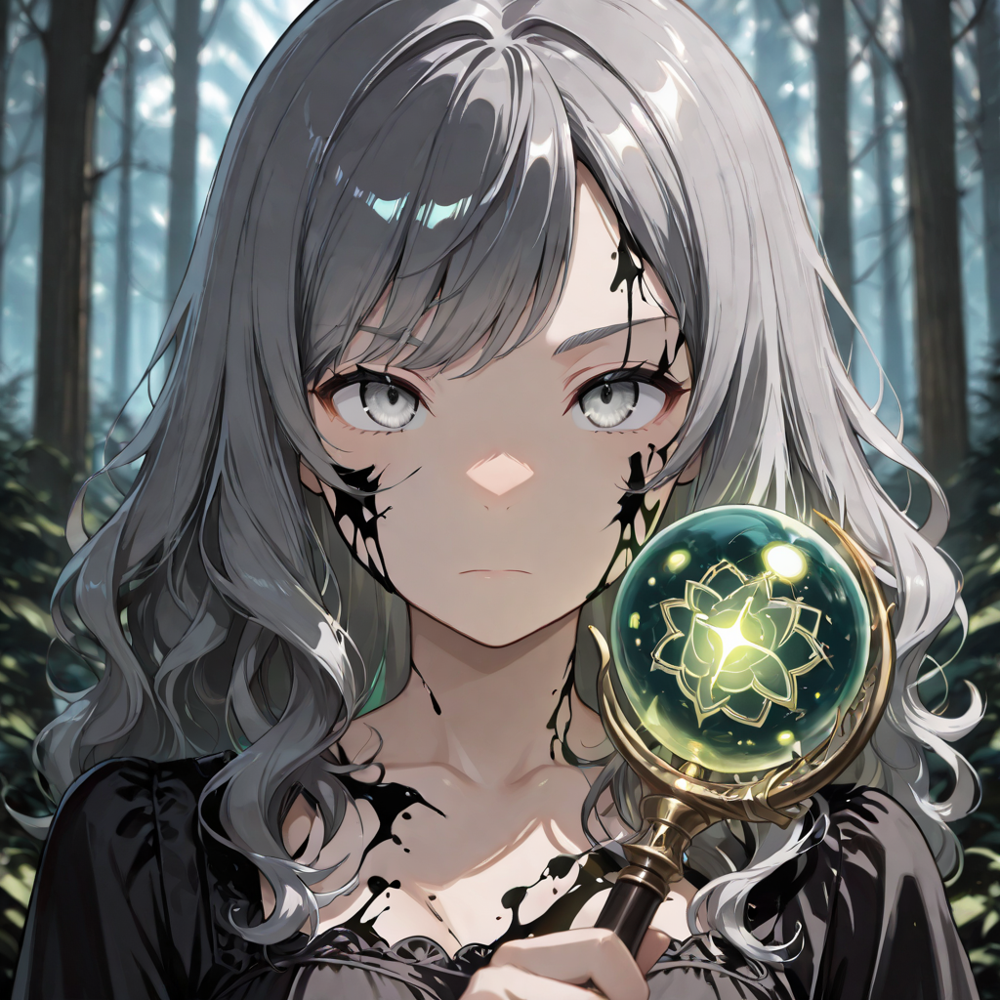
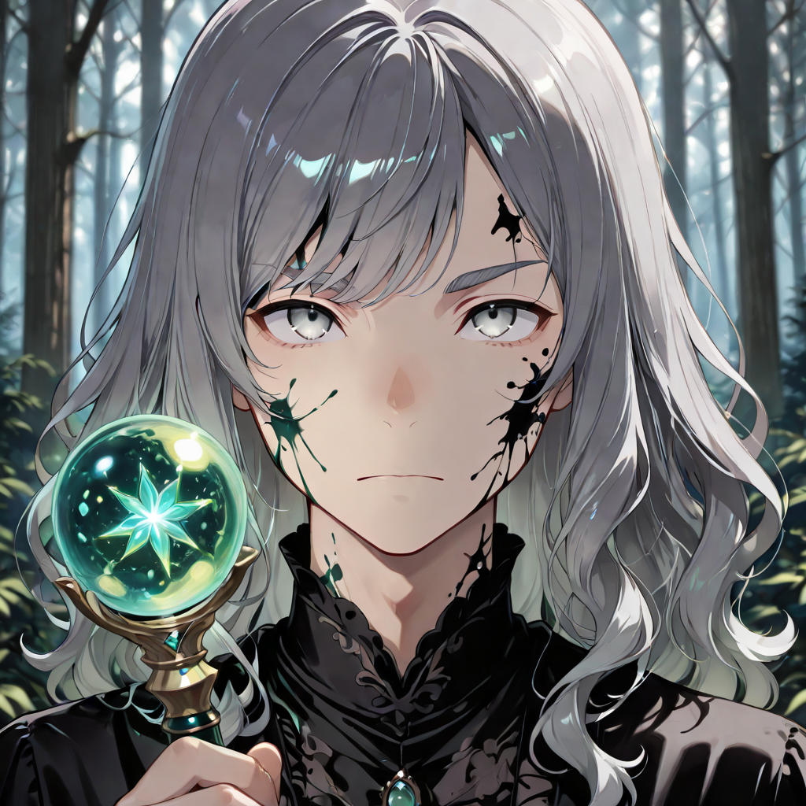

Turbulence as Language
The Corrupted Wind Mages communicate in air currents the way linguists communicate in syntax , with extraordinary precision and an irritation for imprecision in others. In life, they were scholars of atmospheric phenomena: those who mapped weather patterns, studied migration, read the political implications of the wind's direction. They already understood that air was never innocent.
The corruption did not twist their understanding of wind , it simply removed the intermediate step between observation and action. They no longer describe the storm. They are it. Their movement through the battlefield creates eddies of displaced air that throw off the timing of other units around them , ally and enemy alike, though allies learn to compensate faster.
Their form is translucent in the way heat haze is translucent: present, distorting, hard to look directly at. They leave trails in their wake , not footprints, but a brief distortion of the air, like something moved through space too fast for the space to accommodate it.
Tactical Data

Corrupted Gust
Base
Dark Vortex
ActiveGallery

